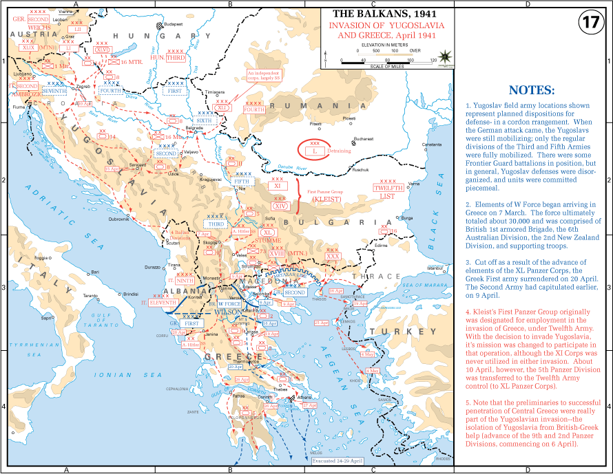

Campaña en los Balcanes
La invasión del Eje de Yugoslavia y Grecia en la primavera de 1941, que aseguró el flanco sur de Alemania antes de atacar a la Unión Soviética.
Datos
| Fechas | 6 de abril – 30 de abril de 1941 |
|---|---|
| Lugar | Yugoslavia y Grecia |
| Resultado | Victoria del Eje; ocupación y reparto de Yugoslavia y Grecia |
| Bando invasor | Alemania e Italia, con Hungría y Bulgaria |
| Defensores | Yugoslavia y Grecia, con una fuerza expedicionaria británica y de la Commonwealth |
| Comandantes | Maximilian von Weichs y Wilhelm List (Alemania); Aléxandros Papagos (Grecia) |
| Consecuencia directa | El Eje domina los Balcanes; a continuación, la invasión aérea de Creta (mayo de 1941) |
Bando invasor
Defensores
y Commonwealth
Introducción
A finales de 1940, Italia invadió Grecia desde Albania, pero fue rechazada y humillada por el ejército griego. Para rescatar a su aliado y asegurar su flanco sur antes de atacar a la URSS, Alemania intervino. Cuando un golpe de Estado sacó a Yugoslavia de la órbita del Eje, Hitler ordenó invadir también ese país. El 6 de abril de 1941 comenzó la ofensiva.
Razones
- Rescatar a Italia: el fracaso italiano en Grecia amenazaba con abrir un frente aliado en el sur de Europa.
- Asegurar el flanco de Barbarroja: Alemania no podía atacar a la URSS con los Balcanes y los británicos a su espalda.
- El giro de Yugoslavia: el golpe de Estado que rechazó el Pacto Tripartito enfureció a Hitler, que decidió aplastar al país.
- Los pozos de petróleo rumanos: proteger Ploiești, vital para la máquina de guerra alemana, de posibles ataques desde Grecia.
Cuerpo (desarrollo)
Yugoslavia fue invadida desde varias direcciones y bombardeada (Belgrado sufrió un durísimo ataque aéreo). Dividido internamente, el ejército yugoslavo se derrumbó y el país capituló en apenas once días, el 17 de abril.
En Grecia, las tropas alemanas rompieron la Línea Metaxas y avanzaron por Macedonia. La fuerza expedicionaria británica y de la Commonwealth, en inferioridad, tuvo que retirarse y evacuar. Grecia capituló el 30 de abril. En mayo, Alemania completó la conquista con una audaz —y costosísima— invasión aerotransportada de Creta.

Mapa de la invasión de Yugoslavia y Grecia, abril de 1941 (Wikimedia Commons): los ejes de avance del Eje desde Austria, Hungría, Rumanía, Bulgaria y Albania. Leyenda original en inglés.
Conclusión
El Eje conquistó los Balcanes en menos de un mes y repartió los territorios entre Alemania, Italia, Hungría y Bulgaria, además de crear estados títere. Pero la victoria tuvo consecuencias a largo plazo.
- Surgieron poderosos movimientos de resistencia, sobre todo los partisanos yugoslavos de Tito, que inmovilizarían tropas del Eje durante toda la guerra.
- Las pérdidas en la invasión de Creta fueron tan altas que Alemania renunció a futuras grandes operaciones aerotransportadas.
- La campaña pudo retrasar el inicio de la Operación Barbarroja (tema debatido).
Curiosidades
- Italia rechazada: la invasión italiana de Grecia de 1940 fue tan mal que los griegos llegaron a avanzar dentro de Albania.
- Creta desde el cielo: fue la mayor operación aerotransportada de la historia hasta entonces, ganada por Alemania pero con un coste que la marcó.
- Resistencia tenaz: Yugoslavia y Grecia se convirtieron en focos de guerrilla que nunca fueron plenamente sometidos.
Teorías
Debates e interpretaciones historiográficas, presentados como tales:
- ¿Retrasó los Balcanes la invasión de la URSS? Durante décadas se afirmó que la campaña obligó a posponer Barbarroja varias semanas, con consecuencias fatales ante el invierno ruso. Hoy muchos historiadores matizan que el retraso se debió más al deshielo primaveral y a la logística que a los Balcanes.
- El coste de rescatar a Italia: se discute cuánto desgastó a Alemania tener que acudir constantemente en ayuda de su aliado italiano.